Um camping em Mogi das Cruzes (SP), dentro de uma reserva de Mata Atlântica na Serra do Itapety, a pouco mais de uma hora da capital. Recebemos barracas e motorhomes, somos pet friendly e daqui saem as trilhas para o Pico do Urubu e para a Pedra do Pôr do Sol. Diárias a partir de R$ 40 por pessoa.
Nosso Camping conta com uma área comum construída para apoio aos campistas! Nela, disponibilizamos geladeira, freezer, fogão com forno à gás, pia, utensílios de cozinha diversos como: panelas, talheres, copos, pratos, entre outros. É importante que você traga os itens e utensílios essenciais para seu uso, já que não garantimos que os utensílios disponibilizados estarão em prefeitas condições, já que contamos sempre com a colaboração e bom senso dos usuários. Se todos cuidam, todos se beneficiam! O espaço conta com dois banheiros com vaso sanitário e chuveiro quente e frio. É necessário levar seus itens de higiene e banho. Temos também tanque de lavar roupa e varal na parte de trás da construção. TODAS as tomadas são 220V. Não nos responsabilizamos por aparelhos danificados e não são permitidos aparelhos com mais de 300 Watts como: chapinhas, ferros de passar, prancha de cabelo, aquecedores, etc. Em caso de chuva, é comum ocorrerem falhas no fornecimento de energia. Nesses casos, use água apenas para o essencial já que a caixa d'água depende de bomba para encher. O sinal de operadoras de celular funcionam mas oscilam. Não há disponibilidade de wi-fi. ***Atente-se ao regulamento completo e, em caso de dúvidas, entre em contato.
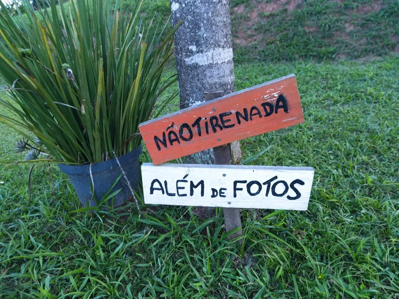
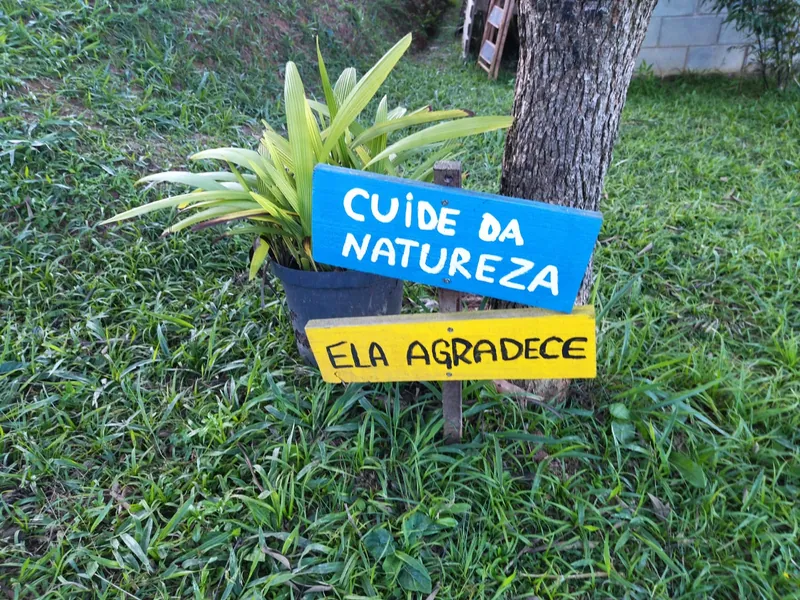

O Camping Colinas do Itapety fica localizado em área rural da cidade de Mogi das Cruzes, exatamente na Serra do Itapety. O acesso é pelaRodovia Ayrton Senna ou Dutra e depois pela Mogi-Dutra (Rodovia Pedro Eroles). Após a Casa do Queijo, há uma saída à direita que é uma descida até o Bar da Gorete. Vira-se então à esquerda na estrada de terra. Em seguida, sair na primeira direita e seguir a estrada até o final. Há uma subida bem íngreme (suba em primeira marcha) e você deve subir até o final onde tem a porteira com a placa do Colinas à sua esquerda. A estrada está em ótimo estado, podendo ser acessada por carros de passeio ou motos. Utilize o Google Maps e NUNCA o Waze (este leva as pessoas para o lugar errado sempre!) Basta colocar no Google: Colinas do Itapety e Boa Viagem!!
Trilha para quem chega de Ônibus: Wikiloc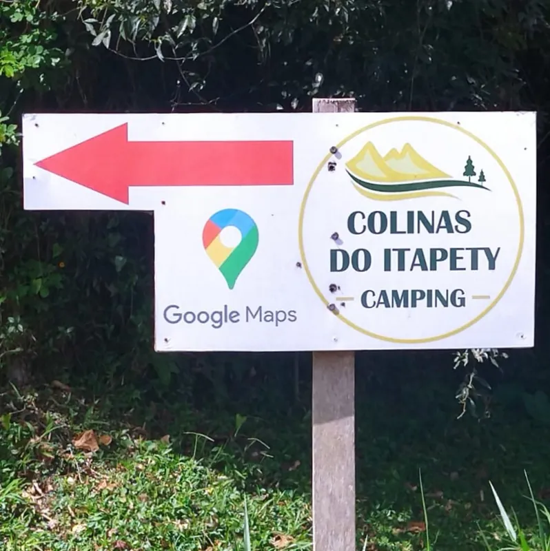
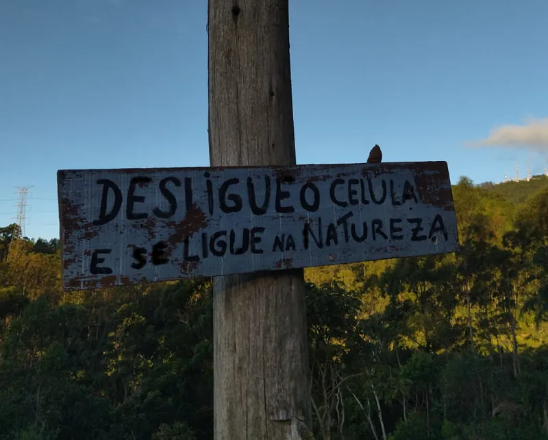

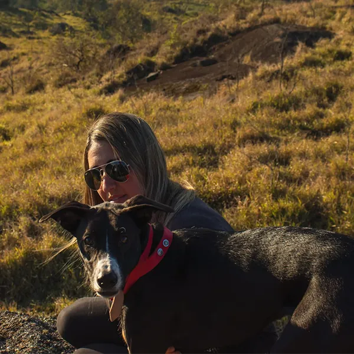
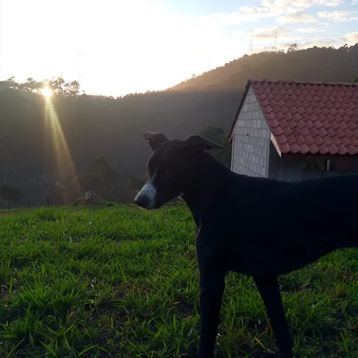
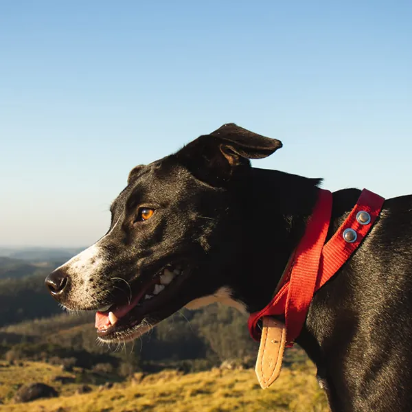
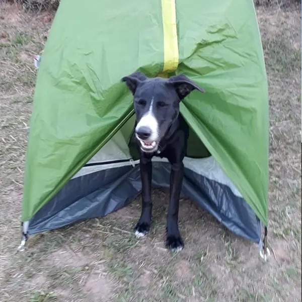
Nosso Camping é Pet Friendly!! Então traga seu cãopanheiro! Mas lembre-se: você tem que recolher as fezes do seu aumigo e procurar manter os outros hóspedes confortáveis com sua presença. No local, há cães e gatos que moram lá e há vizinhos com outros animais. Então, se seu cão tem instinto caçador ou é um pouco mais bravo, ele deve ficar sob seu controle e com focinheira se for o caso.. Caso ocorra algum incidente, você será responsabilizado e deverá arcar com prejuízos.
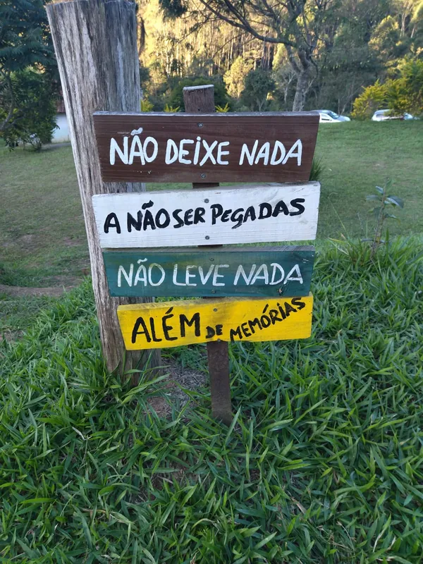
Nossa diária é das 8h até 20h todos os dias, e é relativa ao número de pernoites apenas. Significa que você pode chegar no Camping às 8h de um dia e sair no dia seguinte até 20h, pagando apenas uma diária. Há necessidade de fazer um rápido cadastro para reservar a hospedagem.
Acima de 12 anos: R$40
De 7 até 12 anos: R$30
Até 6 anos: Gratuito
Acima de 12 anos: R$50
De 7 até 12 anos: R$40
Até 6 anos: Gratuito


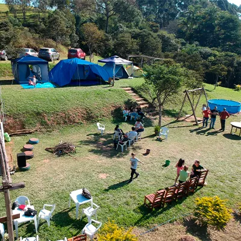
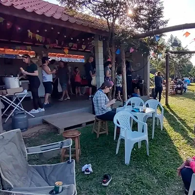
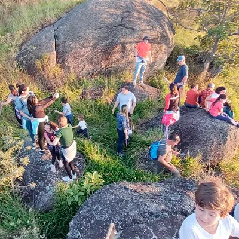
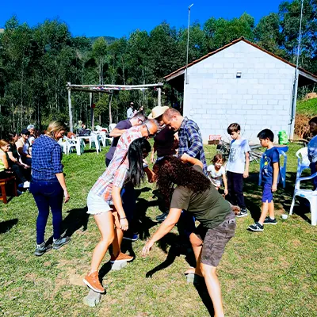
No nosso espaço também acontecem eventos como a festa julina. você pode organizar um evento e trazer a galera para nosso espaço, entre em contato para mais infomações
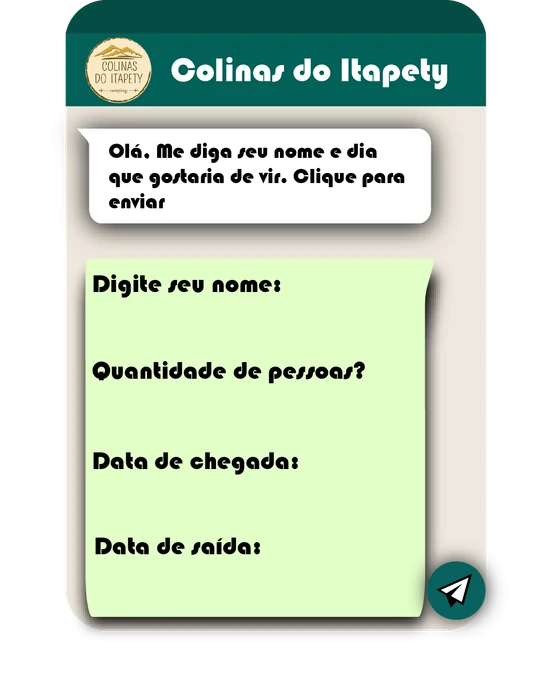